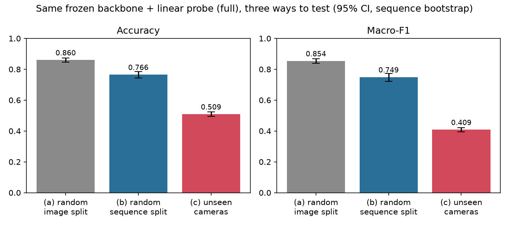
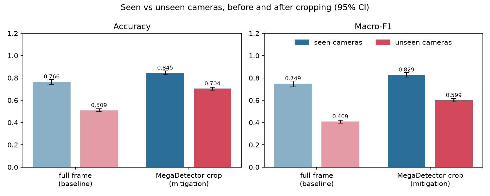
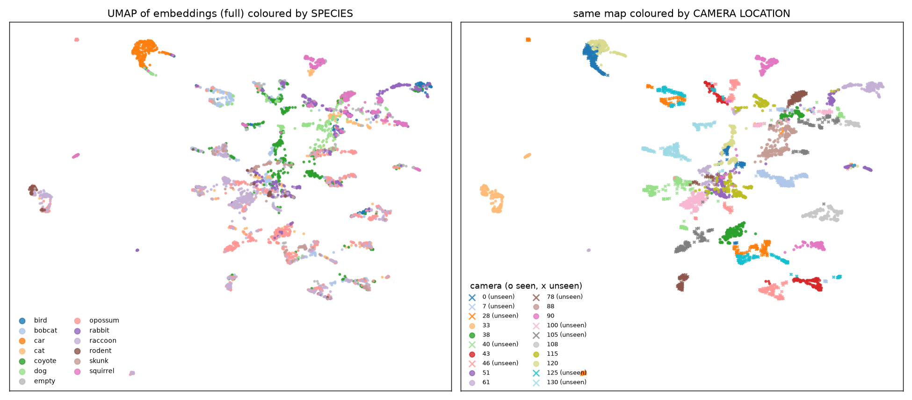

The question behind the metric
Camera traps produce bursts of nearly identical frames from stationary cameras. A random image split can put related frames on both sides of the train/test boundary, rewarding shortcut learning rather than generalization.
The controlled comparison
Using Caltech Camera Traps CCT20, I evaluated a frozen DINOv2-small image backbone and linear probe under random-image, sequence-disjoint and held-out-camera tests. The model, classes and classifier remain fixed across comparisons.



What the experiment found
Accuracy measured 86.0% for a random image split, 76.6% for a sequence split from seen cameras, and 50.9% on unseen cameras. Cropping detected animals with published MegaDetector detections improved unseen-camera accuracy to 70.4%, while narrowing—but not closing—the seen/unseen gap.
Why cropping helped
The control that greyed out the background without enlarging the animal improved held-out accuracy only to 53.6%. This suggests much of cropping's gain came from magnifying the animal, not merely eliminating background information.
Limitations that matter
The analysis uses one frozen backbone, one linear probe, one seed, a sampled portion of bursts and nine primary unseen-camera locations. The MegaDetector boxes were published by LILA and were not generated by a new detector run here. Results should not be generalized to all species or camera networks.
Evidence & limits
CCT20 research analysis, using published MegaDetector detections; 95% intervals in the source are burst-level bootstrap estimates, not guarantees on new ecosystems.